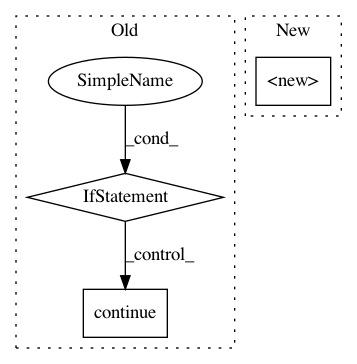

641eb385b41a363b6271e39cfbb926df65b63d94,doc/conf.py,,,#,72
Before Change
"../tutorials/intermediate",
"../tutorials/advanced"]
for folder in sorted(glob("../examples/*") + glob("../tutorials/*")):
if not os.path.isdir(folder) or folder in explicit_order_folders:
continue
explicit_order_folders.append(folder)
// Sphinx gallery configuration
sphinx_gallery_conf = {
After Change
"scipy": "https://docs.scipy.org/doc/scipy/reference",
},
"backreferences_dir": "api/_as_gen",
"subsection_order": gallery_order.sectionorder,
"within_subsection_order": gallery_order.subsectionorder,
"min_reported_time": 1,
}
In pattern: SUPERPATTERN
Frequency: 3
Non-data size: 3
Instances
Project Name: matplotlib/matplotlib
Commit Name: 641eb385b41a363b6271e39cfbb926df65b63d94
Time: 2018-05-16
Author: elch.rz@ruetz-online.de
File Name: doc/conf.py
Class Name:
Method Name:
Project Name: kubeflow/kubeflow
Commit Name: 1d0758bad42918d0344f18e57d1d13747705f855
Time: 2019-02-18
Author: ashahba@users.noreply.github.com
File Name: testing/test_deploy_app.py
Class Name:
Method Name: check_deploy_status
Project Name: dnouri/skorch
Commit Name: 5b022206c0c36d0153bec78b668b4ff029f0af61
Time: 2017-08-02
Author: benjamin.bossan@ottogroup.com
File Name: inferno/callbacks.py
Class Name: BestLoss
Method Name: _yield_key_sign_loss